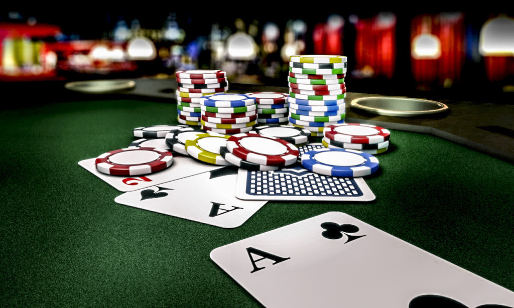

SOLDI SPESI AL SECONDO:
0

Cos'è il gioco d'azzardo?
In buona sostanza il gioco d’azzardo può essere definito come un “gioco” che consiste in una attività
in cui un soggetto scommette denaro o beni su un evento che avrà una risposta casuale. Non per questo
giocare d’azzardo significa giocare con modalità patologiche, non tutti i giocatori d’azzardo devono
essere considerati “malati”.
Tipi di giocatori
Le tipologie di giocatori di azzardo possono essere distribuite lungo una
linea in cui è rappresentato il soggetto e la sua esperienza con il gioco, in base alle sue motivazioni.
il giocatore sociale che gioca per socializzare, per piacere e che riesce a controllare i propri impulsi;
il giocatore problematico non ancora patologico ma dove si manifestano dei problemi, personali o sociali
che tenta di evitare o aggirare con il gioco; il giocatore patologico dove il gioco è ormai diventato un
comportamento distruttivo e che si connette a problematiche psicopatologiche;
Giochi più utilizzati
Oggi i giochi d'azzardo più diffusi in Italia sono le video lottery e le slot machine,
i gratta e vinci, il lotto e il Superenalotto, i giochi al casinò, il “Win for life”, le scommesse sportive o
ippiche, il bingo, i giochi online con vincite in denaro come il poker online.
Importo scommesso e ricavi

In Italia il gioco d'azzardo, le scommesse e le lotterie sono legali. Per gestirli, i fornitori devono acquisire
una licenza di gioco rilasciata dallo stato. L' importo totale scommesso nel mercato del gioco d'azzardo italiano
ha raggiunto circa 88 miliardi di euro nel 2020, in forte calo rispetto al 2019 a causa dell'impatto della pandemia
di coronavirus. Quell'anno, le sale da gioco, i negozi di scommesse e le sale dei casinò hanno dovuto rimanere
chiusi per diversi mesi poiché il paese ha emanato restrizioni di emergenza per limitare la diffusione del virus. A seguito
di queste chiusure, i ricavi lordi da gioco dell'industria del gioco d'azzardo in Italia ammontava a circa 13 miliardi
di euro nel 2020, la cifra più bassa registrata dal 2015. Il GGR, ovvero il profitto realizzato dai fornitori di giochi, è la
differenza tra l'importo scommesso e il totale delle vincite del giocatore. Nel 2020, le slot machine di intrattenimento a premio,
i terminali di videolotteria e le macchine da gioco di abilità a premio sono stati il tipo di giochi che ha
generato i più alti GGR del mercato del gioco d'azzardo italiano.